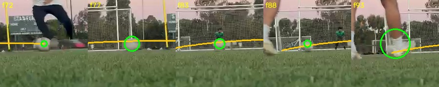
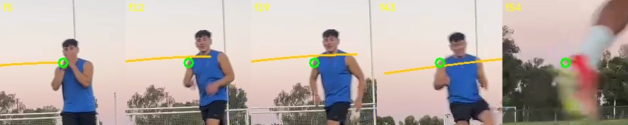
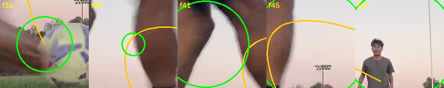
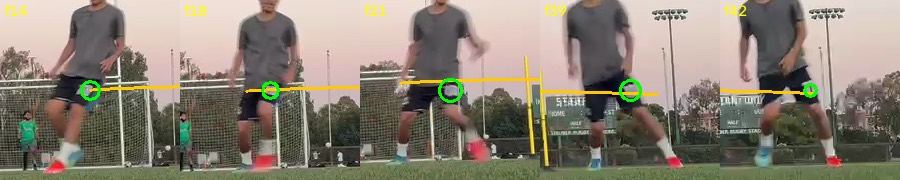
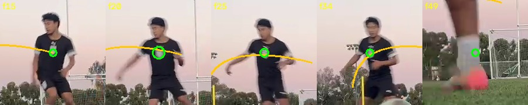
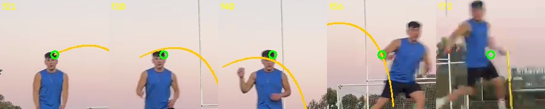

STRYKE · 당신의 무빙볼 클립, 실제 분석
Your Shot
당신이 준 158초 훈련 영상에서 잘라낸, 굴러가는 공을 달려가서 차는 장면. 아래 영상과 숫자는 전부 이 클립에서 파이프라인이 실제로 산출한 것 — 데모 데이터가 아닙니다.
01The overlay

f80이 컨택 — 부츠가 공을 가리는 f81–88 구간을 흰-원반 확인(가림 양쪽에서 공이 원반으로 확인돼야 동일 개체로 인정)으로 건너뛰고, f91부터 비행을 다시 잡아 낙하까지 따라갑니다.
02The numbers
03밴드가 왜 이렇게 넓은가 — 그리고 그게 왜 옳은가
crossbar_907px_is_5.9x_the_post_separation — "크로스바"라고 잡힌 선이 포스트 간격의 5.9배, 즉 크로스바가 아님. 포스트 길이도 251px vs 69px로 서로 다름. 자가 없으니 스케일은 약한 자(중력·공 지름)에 의지하고, 그 둘은 축방향 슛에서 24–35% 어긋납니다 — 그래서 밴드가 넓고, point는 거부.04네 가지 리플레이
같은 슛의 네 출력 — MVP 권고안의 4종 그대로. 메시 슬롯은 GPU 파이프라인이 채웁니다.
05다른 타격 이벤트들
주의: 운동학적으로 패스도 타격이라 스캐너가 함께 제안합니다 — 발이 공을 때리는 이벤트는 물리로 구분이 안 되고, 앱의 실제 사용(골대 앞 슛 연습)에선 이 모호함이 거의 사라집니다. 슛/패스 구분 태그는 파이프라인에 추가 중.
같은 158.7초 영상 전체를 pipeline.shots로 다시 훑었습니다. 값싼 제안 레인 두 개(시각·에너지)가 창을 제안하고, 각 창을 기존 솔버가 판정합니다. 결과: 창 19개, 소스의 55.4%를 덮음.
NOT_A_SHOT 0은 "창들이 검증되어 공이 있었다"는 뜻이 아니라 "걸러진 게 없다"는 뜻입니다. 창이 소스의 절반 이상을 덮으므로, 제안이 무언가를 포함한다는 사실 자체도 약한 증거입니다. 정밀도는 측정되지 않았습니다 — 나머지 창엔 라벨이 없습니다.| # | 소스 프레임 | 시간 | 판정 | 밴드 km/h | 컨택 | 관측 | 피팅 rms |
|---|---|---|---|---|---|---|---|
| #0 | f54–165 | 1.80–5.53s | REFUSED | — | — | — | — |
| #1 | f281–418 | 9.37–13.97s | BAND_ONLY | 36.2–99.4 | f353 | 22 | 6.4 px |
| #2 | f504–644 | 16.80–21.50s | REFUSED | — | — | — | — |
| #3 | f655–766 | 21.84–25.57s | BAND_ONLY | 20.4–157.9 | f660 | 28 | 50.7 px ✗ |
| #4 | f851–962 | 28.37–32.11s | BAND_ONLY | 10.0–15.8 | f887 | 9 | 103.1 px ✗ |
| #5 | f980–1091 | 32.67–36.41s | REFUSED | — | — | — | — |
| #6 | f1107–1218 | 36.91–40.64s | BAND_ONLY | 42.5–148.9 | f1121 | 13 | 4.5 px |
| #7 | f1297–1408 | 43.24–46.98s | BAND_ONLY | 18.0–40.5 | f1312 | 21 | 6.5 px |
| #8 | f1482–1626 | 49.41–54.24s | REFUSED | — | — | — | — |
| #9 | f1929–2167 | 64.31–72.28s | REFUSED | — | — | — | — |
| #10 | f2225–2402 | 74.18–80.12s | REFUSED | — | — | — | — |
| #11 | f2485–2686 | 82.85–89.58s | REFUSED | — | — | — | — |
| #12 | f2712–2823 | 90.42–94.15s | REFUSED | — | — | — | — |
| #13 | f2959–3125 | 98.65–104.22s | BAND_ONLY | 11.8–58.1 | f2980 | 37 | 11.8 px |
| #14 | f3248–3487 | 108.29–116.29s | REFUSED ← 라벨된 슛이 여기 있음 | — | — | — | — |
| #15 | f3458–3568 | 115.29–118.99s | REFUSED | — | — | — | — |
| #16 | f4063–4174 | 135.46–139.19s | REFUSED | — | — | — | — |
| #17 | f4304–4415 | 143.49–147.23s | REFUSED | — | — | — | — |
| #18 | f4664–4759 | 155.50–158.70s | REFUSED | — | — | — | — |
밴드·컨택·관측·rms는 모두 스캔과 동일한 설정(골대 치수 미지정)에서 나왔고, 스캔이 기록한 판정과 정확히 일치합니다.
BAND_ONLY는 "솔버가 밴드를 냈다"는 뜻이지 "맞는 물체를 쟀다"는 뜻이 아닙니다. 아래 오버레이 스트립을 육안으로 확인한 결과, 6개 중 #1 하나만 실제로 공을 따라갑니다. 실패는 두 종류로 갈립니다.
(1) 모델이 아예 안 맞음 — #3, #4. 재투영 rms가 파이프라인 자신의 기준(30 px 초과면 거부)을 넘습니다(50.7 px · 103.1 px). 파이프라인이 스스로 적어둔 문장: "the flight model does not fit the observations … the track, the geometry or both are wrong". #4는 실측 검출이 9개뿐이고, #3·#4·#6은 형상 파라미터가 경계에 붙은 채(railed) 멈췄습니다 — 데이터가 아니라 경계가 해를 정했다는 뜻입니다.
(2) 모델은 훌륭히 맞지만 대상이 틀림 — #6, #7, #13. 이쪽이 더 위험합니다. rms가 각각 4.5 · 6.5 · 11.8 px로 #1보다도 좋습니다. 그런데 스트립을 보면 초록 마커가 선수의 허리·가슴·얼굴 위에 얹혀 있습니다. 부드럽게 움직이는 몸통은 포물선에 아름답게 맞기 때문입니다. 낮은 rms는 "공을 추적했다"는 증거가 아닙니다. 며칠 전 이 클립에서 있었던 "다리를 추적한 자신 있는 오답"과 같은 실패가, 이번엔 좋은 rms를 달고 재발했습니다.
그래서 이 표에서 밴드를 숫자로 읽어도 되는 창은 #1 하나입니다. 나머지 5개의 밴드는 숫자로 취급하면 안 됩니다. 스트립을 함께 실어두었으니 직접 확인하실 수 있습니다 — 이 판정은 자동 검사가 아니라 육안 확인이며, 그렇게 밝혀둡니다.
BAND_ONLY 6개 — 오버레이






stream copy라 가장 가까운 키프레임에서 시작하므로 같은 프레임을 담고 있지 않습니다. 실제로 확인했습니다: 창 #1은 스캔에서 BAND_ONLY지만, 자기 클립 위에서 다시 돌리면 moving_ball_flight_not_ballistic으로 거부됩니다. 그래서 위 오버레이는 클립이 아니라 스캔이 본 그 프레임들에서 생성했고, 덕분에 표의 숫자와 판정이 서로 어긋나지 않습니다.거부 13개 — 무엇이 걸렸나
13개 전부 최상위 사유가 하나로 같습니다: moving_ball_flight_not_ballistic — 두 진입 전략이 모두 시작에 실패했다는 뜻입니다. 세부 사유는 후보별로 이름이 붙습니다. 13개 창을 합쳐 정지공 후보 46개, 무빙볼 스트라이크 후보 222개가 재추적 끝에 탈락했습니다.
횟수는 사유 문자열이 이름을 밝힌 후보(창당 상위 5개)에 대한 집계입니다. 222개 후보 전체의 분포가 아닙니다 — 파이프라인이 이름을 대지 않은 것을 세지는 않았습니다.
3340–3405에 있습니다 — 01·02절에서 분석한 바로 그 슛입니다. 제안 레인은 맞게 찾았습니다: 시각 레인 온셋이 f3346으로, 라벨된 컨택(f3349)에서 3프레임 거리입니다. 그런데 창 병합이 이 온셋을 이웃한 에너지 온셋 3개(f3284·f3425·f3449)와 합쳐 240프레임짜리 창 #14를 만들었고, 그 폭 안에서 솔버는 스트라이크 후보 26개를 놓고 헤매다 거부했습니다. 같은 슛을 112프레임으로 손수 자르면 풀립니다(01절). 이 한 건에서 잃은 것은 검출이 아니라 창 폭입니다.
덧붙여, 관찰된 패턴 하나: 폭이 가장 넓은 창 4개(240·239·202·178프레임)는 모두 거부됐고, BAND_ONLY 6개는 전부 167프레임 이하였습니다. n=19이므로 이것은 법칙이 아니라 관찰입니다 — 112프레임 창도 여럿 거부됐습니다.
7.32×2.44 m를 주고 다시 돌리면 6개 중 4개는 골대 후보가 검증에서 실격해 밴드가 한 자리도 바뀌지 않습니다. 그러나 창 #4와 #13에서는 어떤 골대 후보가 검증을 통과해 자를 세웠고(metric_reference: true), 밴드가 #4는 10.0–15.8 → 10.1–16.6, #13은 11.8–58.1 → 8.3–32.5로 이동했습니다. 이 영상의 골대는 연습용 소형 골대이므로 그 통과가 옳은지는 이 클립만으로 확인할 수 없습니다 — 그래서 표에 넣지 않고 여기 적어둡니다. (두 창 모두 위에서 몸을 추적한 것으로 판정됐으므로, 어느 쪽 밴드든 읽을 숫자는 아닙니다.)063D 씬
216.0 km/h · 발사각 −10° · 정점 0.11 m · 사거리 84 m — 공이 시속 216으로 지면 11 cm 높이를 84 m 활공하는 궤적. 물리가 아니라 솔버가 파라미터 한계(v0 상한 60 m/s, 발사각 하한 −10°)에 박힌 채 포기한 값이고, 넷 다 동일한 이유로 무의미합니다. 미터 자 없는 클립의 "3D 궤적"이란 이런 것이라서, 게이트는 이걸 그리지 않습니다.01절의 그 슛(ball_flight.json)을 서버 3D 씬 렌더러에 --mode shot으로 넘겼습니다. 렌더러는 거부했습니다. 출력 전문:
{
"rendered": false,
"reason": "only 1 solved points — refusing to render a hero clip"
}
MIN_POINTS_FOR_HERO = 8). 이 클립의 points_3d에는 1개뿐입니다. 그 이유는 03절과 똑같은 뿌리입니다:
프레임에 미터 자가 없음 → 컨택 순간 공이 이미 공중에 있어(컨택 전 수직 가속도 −0.24 px/frame², 자유낙하 0.39와 일관) "광선이 지면과 만난다"는 가정이 무너짐 → 월드 프레임의 원점이 고정되지 않음 → 미터 궤적이 무너져(1.5 px 안에 맞는 카메라 기하 4개의 정점이 전부 0.11 m) 첫 샘플 이후 공이 공 반지름 아래로 내려감 → 남는 점이 1개.
즉 그릴 3D 궤적이 애초에 없습니다. 40프레임의 픽셀 추적은 진짜지만(01절), 그것을 미터로 세울 자가 없으면 3D 씬은 존재하지 않는 것을 그리게 됩니다. 이 클립에는 몸(body) 해가 없으므로 body 모드로 우회하지도 않았습니다 — 다른 클립의 궤적을 이 선수의 동작 옆에 놓는 것이 이 저장소가 할 수 있는 가장 그럴듯한 거짓말이기 때문입니다.